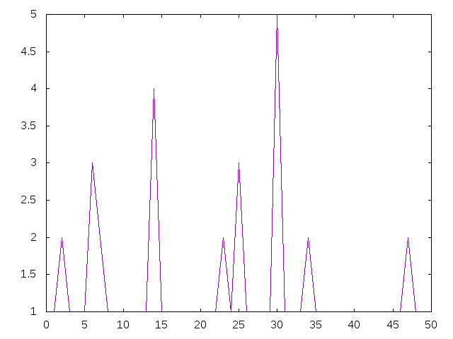

Mayor exponente
Definir las funciones
mayorExponente :: Integer -> Integer graficaMayorExponente :: Integer -> IO ()
tales que
- (mayorExponente n) es el mayor número b para el que existe un a tal que n = a^b. Se supone que n > 1. Por ejemplo,
mayorExponente 9 == 2 mayorExponente 8 == 3 mayorExponente 7 == 1 mayorExponente 18 == 1 mayorExponente 36 == 2 mayorExponente (10^(10^5)) == 100000
- (graficaMayorExponente n) dibuja la gráfica de los mayores exponentes de los números entre 2 y n. Por ejemplo, (graficaMayorExponente 50) dibuja

Soluciones
import Data.List (genericLength, group) import Data.Numbers.Primes (primeFactors) import Test.QuickCheck import Graphics.Gnuplot.Simple -- 1ª solución -- =========== mayorExponente :: Integer -> Integer mayorExponente x = last [b | b <- [1..x] , a <- [1..x] , a^b == x] -- 2ª solución -- =========== mayorExponente2 :: Integer -> Integer mayorExponente2 x = head [b | b <- [x,x-1..1] , a <- [1..x] , a^b == x] -- 3ª solución -- =========== mayorExponente3 :: Integer -> Integer mayorExponente3 x = aux x where aux 1 = 1 aux b | any (\a -> a^b == x) [1..x] = b | otherwise = aux (b-1) -- 4ª solución -- =========== mayorExponente4 :: Integer -> Integer mayorExponente4 x = mcd (exponentes x) -- (exponentes x) es la lista de los exponentes en la factorizacioń de -- x. por ejemplo. -- exponentes 720 == [4,2,1] exponentes :: Integer -> [Integer] exponentes x = map genericLength (group (primeFactors x)) -- (mcd xs) es el máximo común divisor de xs. Por ejemplo, -- mcd [4,6,10] == 2 mcd :: [Integer] -> Integer mcd = foldr1 gcd -- Comprobación de equivalencia -- ============================ -- La propiedad es prop_mayorExponente :: Integer -> Property prop_mayorExponente n = n >= 0 ==> mayorExponente n == mayorExponente2 n && mayorExponente2 n == mayorExponente3 n -- La comprobación es -- λ> quickCheck prop_mayorExponente -- +++ OK, passed 100 tests. -- Comparación de eficiencia -- ========================= -- λ> mayorExponente (10^3) -- 3 -- (3.96 secs, 4,671,928,464 bytes) -- λ> mayorExponente2 (10^3) -- 3 -- (3.99 secs, 4,670,107,024 bytes) -- λ> mayorExponente3 (10^3) -- 3 -- (3.90 secs, 4,686,383,952 bytes) -- λ> mayorExponente4 (10^3) -- 3 -- (0.02 secs, 131,272 bytes) -- Definición de graficaMayorExponente -- ====================================== graficaMayorExponente :: Integer -> IO () graficaMayorExponente n = plotList [ Key Nothing , PNG ("MayorExponente.png") ] (map mayorExponente3 [2..n])